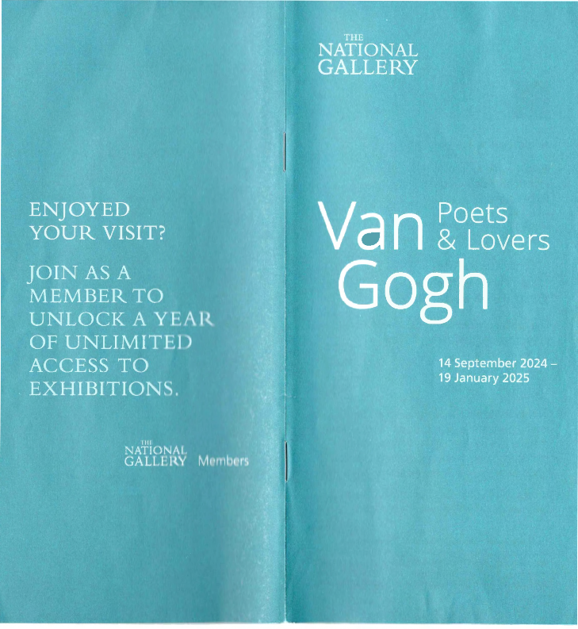
Exhibition plan
Exit
Audio Tour M
Shop
Entrance
£ 5 per person
Buy a n audio t our for
Van Gogh: Poe&tsLovers
The tour plays on your o w n mobile
device, through your own headphones
1 . Connect t o o u r Wi-Fil
Scan t h e QR t o purchase
Click t h e link o n your e-ticket
in your mobile device's w e b browser.
The exhibition audio t our will open
Room 11 Room 2
Room 3
Introduction
The Garden:
Poetic Interpretations
The Yellow House:
A n Artist's Home
Room 4 Montmajour:A Series
Room 5 Decoration
Within the exhibition, light levels are kept
reading this booklet or t h e information o
n
low to protect the works. If you have difficulty
Room 6
Variations o n a Theme
the walls, please pick up a large-text version
from the dispenser a t t h e exhibition entrance.
Works w i t h i n the exhibition a r e numbered
but may not always
aipnpseeaqr uence.
The exhibition has been made possible by t h e provision o f
insurance through t h e Government Indemnity Scheme. The National Gallery would like to thank HM Government for providing Government Indemnity a n d t h e Department f o r Culture, Media
and Sport a n d Arts Council England for arranging t h e indemnity.
Exhibition supported by
LPehaidlanthropic Supporter
Kenneth C. Griffin
GRIFFIN
CATALYST
CHRISTIE'S
WHITE &CASE
David and Molly Lowell Borthwick
With additional support from Adrian Sassoon and Edmund Burke
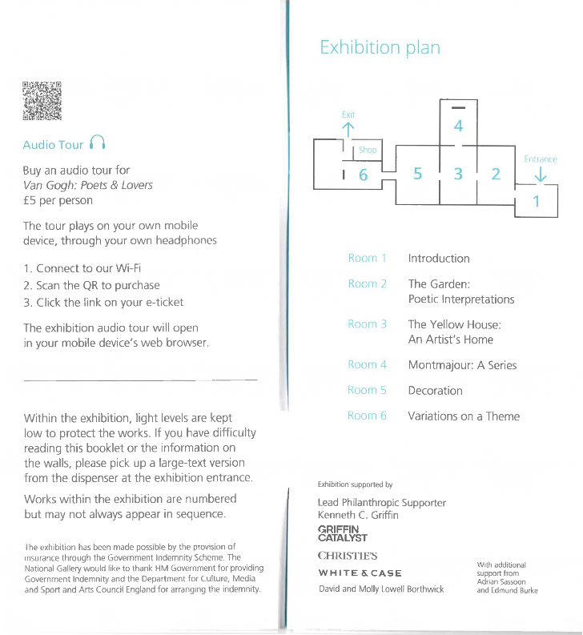
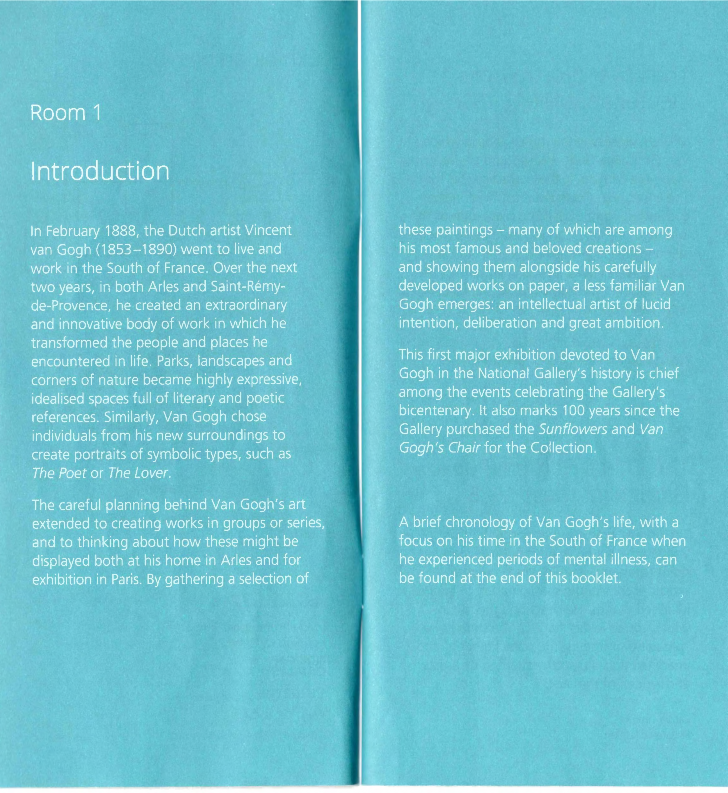
1 n
The Lover (Portrait of Lieutenant Milliet), 1888
Milliet's success with women, about which Van Gogh was both amused and envious, made the lieutenant the perfect model for The Lover. Van Gogh depicts Milliet in the dashing uniform of the Zouaves - one of the infantry units linked to North Africa - whose star and crescent regimental emblem Van Gogh reverses (for reasons unknown) in the
background. The men became friends in Aries, with Van Gogh giving Milliet drawing lessons.
Oil on canvas
Kroller-MOller Museum, Otterlo, The Netherlands
3
The Poet (Portrait of Eugene Boch), 1888
Van Gogh had detailed plans for how he would depict a poet some time before he found Eugene Boch (a painter) to be his model. Van Gogh felt Boch was ideal
as he had a narrow face that reminded him of the 13th-century poet Dante. The deep blue sky behind the figure, intended to express a man 'who dreams great dreams', was essential to the symbolism of the work.
Oil on canvas
Musee d'Orsay, Paris, bequest of Eugene Boch, 1941
2
The Poet's Garden (Public Garden in Aries), 1888
The unremarkable public garden in front of Van Gogh's home in Aries was the starting point for many views in which he used artistic licence and his imagination to create idealised worlds. He described the site in which young lovers stand in the shade of a spreading fir tree as 'the poet's garden' and imagined it as a place frequented by artists and writers of the past.
Oil on canvas Private collection
-I
I
II,
Room2
The Garden:
Poetic Interpretations
Van Gogh chose a great variety of motifs from the public garden in front of his home in Aries and later within the
confines of the grounds of the hospital of Saint-Paul de Mausole at Saint-Remy-de Provence. In his paintings and works on paper, he selected specific viewpoints and varied his approach to style and use of colour to explore wide-ranging emotional and poetic possibilities, often with a literary or artistic source in mind. In aiming to convey meaning rather than accurately record nature, Van Gogh took a free hand in adjusting or recomposing what he observed to achieve his desired effects.
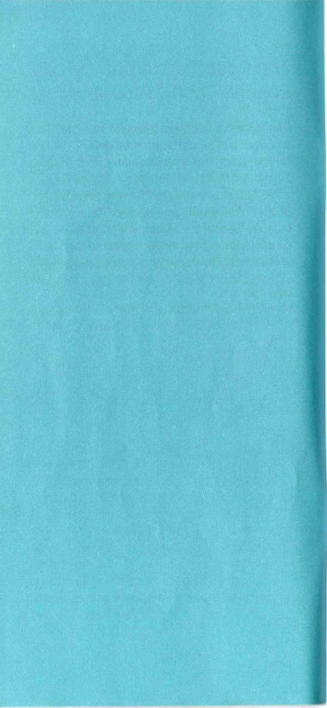
4
The Public Garden, Aries, 1888
Van Gogh repeatedly drew and painted views of the gardens in Aries over the summer of 1888. On 22 October he wrote to his brother Theo (1857-1891) to say that, despite promising himself not to work, he could not resist painting the park's autumn colours. 'But it's like that every day, sometimes in passing I find such beautiful things that in the end you have to try to do them anyway.'
Oil on canvas Private collection
5
Entrance to the Public Garden in Aries, 1888
The gardens in Aries inspired contrasting moods. Van Gogh depicted this view of the park as an everyday scene. He described the locals as 'something out of Daumier
come to life', a reference to the French artist famous for his caricatures. There is a comical edge to figures such as the man in worker's blue transfixed by his newspaper - possibly Van Gogh himself - and the squat woman labouring up the path.
Oil on canvas
The Phillips Collection, Washington, DC. Acquired 1930
6
Path in the Park, Aries, 1888
The park in front of the Yellow House,
Van Gogh's home in Aries, was close to the town's station. Yet in this view the groups
of colourfully dressed figures moving beneath the trees appear less like passers-by than participants in a fete ga/ante, or elegant outdoor entertainment, as imagined by the artists Jean-Antoine Watteau (1684-1721) and Adolphe Monticelli (1824-1886). Van Gogh admired both artists.
Oil on canvas
Kroller-M0ller Museum, Otterlo, The Netherlands
1n
Undergrowth, 1889
Van Gogh became fascinated by the large, neglected garden of the hospital at Saint Remy, to which he admitted himself in May 1889 after a series of mental breakdowns in the preceding months. In this innovative composition, he looks directly down into the dense undergrowth and ivy that climbs the nearby trees. The richly textured, swirling paint evokes the dense vegetation as well as the dappled light that breaks
into open sunlight at the top of the canvas.
Oil on canvas
Van Gogh Museum, Amsterdam (Vincent van Gogh Foundation)
8
The Garden of the Asylum at Saint Remy, 1889
This was one of the first works Van Gogh painted after arriving at the hospital at Saint Remy. During his first weeks, Van Gogh was not allowed beyond the hospital garden but found delight in its overgrown and intimate corners, which he associated with 'nests of greenery for lovers' - continuing a poetic theme he had explored in the park in Aries.
Oil on canvas
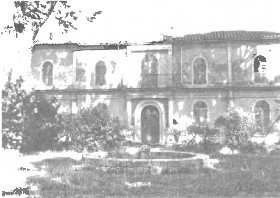
..
I •
/
Kroller-MOller Museum, Otterlo, The Netherlands
9
Flowering Shrubs, 1889
Chalk, brush, diluted oil paint and pencil on paper Colecci6n Perez Sim6n, Mexico
10
Tree and Bushes in the Garden of the Asylum, 1889
Chalk, brush and oil paint and ink, on paper Van Gogh Museum, Amsterdam
(Vincent van Gogh Foundation)
The courtyard of the Saint-Paul Cloister in Saint-Remy
Fotocollect,e Van de Poll© Dutch National Archives. 2 24.14.02 / 252-1828
These close-up views of shrubs and flowers were made during Van Gogh's first weeks at Saint-Remy in May-June 1889. His assured, rapid application of bold dashes, hatching, dots and swirls capture the different textures of the vegetation to create richly patterned surfaces. The works on paper belong to
a small and unique group in diluted paint in which Van Gogh sought to capture the vibrancy and profusion of spring growth, as
well his excitement at the artistic possibilities offered by his new environment.
11
A Corner of the Garden of Saint-Paul's Hospital at Saint-Remy, 1889
Using soft graphite and ink on pinkish paper, this ambitious drawing is the most finished of a group Van Gogh made of this corner of the hospital garden. Above a fence, a row of pines with irregular, windswept growth shelters
the overgrown grass below, which is dotted with flowers such as the foreground irises. The bending gardener or labourer may have been someone Van Gogh observed, but could equally have been invented.
Graphite and ink on paper
Tate: Bequeathed by C. Frank Stoop 1933
12
The Garden of the Asylum with Sawn-Off Tree, 1889
By the autumn of 1889, Van Gogh turned from his initial interpretation of the hospital's garden as a 'nest for lovers' to seeing it as a site of suffering. In this drawing, related to the painted work that hangs alongside (13), Van Gogh attempted to convey this sense of anguish via the intensity of his pen strokes. These capture the dense growth of the pine trees and the rain puddles on the path.
Black chalk, quill and reed pen and brown ink on paper Private collection
13 n
The Park of the Hospital at Saint-Remy, 1889
Melancholy permeates this powerful depiction of the garden at Saint-Remy, which is dominated by a sawn-off pine tree that had been struck by lightning. In a letter to his friend, the painter Emile Bernard (1868-1941), in November
1889, Van Gogh described the tree as a 'dark giant - like a proud man brought low' and detailed how he combined composition, colour and technique to convey the anxiety felt by his fellow patients at the hospital.
Oil on canvas
Museum Folkwang, Essen
14
Hospital at Saint-Remy, 1889
Van Gogh chose a vertical format to give full height to the massive pine trees that dwarfed the male wing of the hospital building. The reddish soil, highly stylised tree trunks and interlocking branches overhead produce a vibrant but oppressive environment within which Van Gogh arranges a number of figures, including perhaps himself, just left of centre. The women are an invention; female patients were not allowed in this part of the grounds.
Oil on canvas
The Armand Hammer Collection, Gift of the Armand Hammer Foundation, Hammer Museum, Los Angeles
15
Trees in the Garden of the Asylum, 1889
Two curving tree trunks, cropped at the
top and bottom of the picture, frame a view towards one of the terraced lawns at the edge of the hospital gardens. Van Gogh greatly admired and collected Japanese woodblock prints, in which such dramatic compositional devices were common. This work's graphic quality is counterbalanced by his choice to paint a densely worked sky.
Oil on canvas Private collection
16
Iris, 1890
Irises grow in profusion in the South of France and there were many in the garden at Saint-Remy. Van Gogh isolated this single plant, just coming into full bloom, almost
as if he were painting a portrait. He used cardboard as a support as he was running short of canvas at the time.
Oil on cardboard, later thinned and mounted on canvas National Gallery of Canada, Ottawa. Purchased 1954
17
Roses, 1889
Van Gogh's attention was caught by the profusion of pink blooms on this rose bush in the overgrown garden at Saint-Remy.
Manipulating thickly applied paint with a
wide variety of brushstrokes, from the swirling to the spiky, he captures the differing textures of the soft rose petals amid the surrounding grasses, flowers, shrubs and weeds.
Oil on canvas
The National Museum of Western Art, Tokyo.
Matsukata Collection
18
Park at Aries with a Corner of the Yellow House, 1888
Van Gogh drew this meandering path in the park at Aries shortly after he began renting the Yellow House in May 1888. A corner of the house can be glimpsed in the upper right.
Van Gogh felt he could probably have found
a better place to rent, but wrote 'the delightful thing about this studio is the gardens opposite'.
Quill and reed pen and brown ink on paper Private collection
19
Garden with Weeping Tree, Aries, 1888
Diagonal stripes of hay wilting on a newly mown lawn create an almost abstract pattern in this extraordinary view onto a small patch of the public gardens at Aries. A great variety
of marks evoke cut grass, shadows, foliage and gravel. This drawing was made after an oil painting that Van Gogh hailed as a 'new subject'. In this and other works on paper he explored the subject further, aiming for more 'clarity of touch'.
Ink with traces of graphite on paper The Menil Collection, Houston
20
Weeping Tree, 1889
'Today I've made one of those drawings which became very dark and quite melancholic for springtime', Van Gogh wrote to his brother in May 1889. Depicting the same tree and round bush he had often captured in drawings the previous year (18 and 19), Van Gogh created an entirely different composition. He also made more vigorous use of one of his own hand-cut reed pens and other media to give the work its emotional charge.
Reed pen and black-brown ink, with black chalk on off-white wove paper
The Art Institute of Chicago,
Gift of Tiffany and Margaret Blake, 1945.31
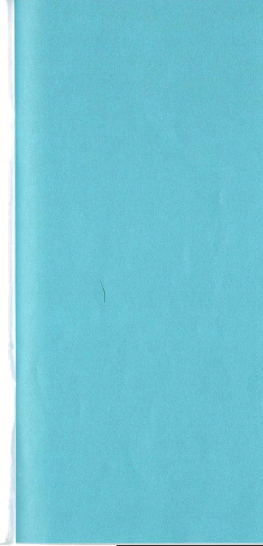
Room 3
,,.
lo{•
, ..
The Yellow House: An Artist's Home
' .
Initially Van Gogh only used the Yellow House, which he rented in early May 1888, as a studio because it needed both renovation and furniture. By September he moved in and had bold plans to turn the modest house into an 'artist's home' and a communal 'studio of the South' in which his artist friends from Paris could join him to work. He devised a decoration for the house that included his major paintings. This then evolved into carefully conceived ideas about how to present his art to the public The works in this gallery were part of his ambitions.
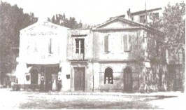
The Yellow House (right) on the Place Lamartine at Aries
0 Album/ Alamy Stock Photo
21
Van Gogh's Chair, 1888
A rustic chair on which Van Gogh has placed his pipe and tobacco stands as the artist's surrogate self portrait, while the terracotta tiles and limewashed walls give a glimpse of the Yellow House's simple interior. Painted in late 1888, when the painter Paul Gauguin (1848-1903) had come to stay in Aries,
it is one of a pair - the other flatteringly representing Gauguin via an armchair with two novels and a candle on its seat.
Oil on canvas
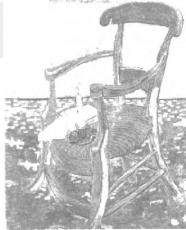
.'.I . .,,_.
·I•
The National Gallery, London. Bought, Courtauld Fund, 1924
Vincent van Gogh, Gauguin's Chair, Aries, November 1888. Van Gogh Museum, Amsterdam (Vincent van Gogh Foundation)
@ Van Gogh Museum, Amsterdam (Vincent van Gogh Foundation)
22 n
Starry Night over the Rhone, 1888
'The starry sky at last, actually painted at night, under a gas-lamp' was how Van Gogh described this view of Aries from across the River Rhone. Despite painting it largely outdoors and in real time, he made compositional choices to achieve the effect he was after by positioning the constellation of Ursa Major above the scene and inventing the foreground lovers. Their presence was essential to his conception of the picture's status as a 'poetic subject'.
Oil on canvas
Musee d'Orsay, Paris, Donation of Mr. and Mrs. Robert Kahn-Sriber, in memory of Mr. and Mrs. Fernand Moch, 1975
23
The Sower, 1888
By the artist's estimation, this depiction of a sower silhouetted against an enormous sun was among his most important works from Aries.
Mostly working in the studio, he fused motifs from other artists and Japanese prints with his own observations of nature. By placing the huge disc of the sun behind the figure of the sower, he created a powerfully expressive image with symbolic content and Christian overtones.
Oil on canvas Sammlung Emil B0hrle,
on long-term loan at Kunsthaus Zurich
24
The Yellow House (The Street), 1888
The Yellow House, with its bright green shutters and door, forms part of an urban view of Aries, which includes a steam train passing over a bridge and mounds of earth for roadworks.
Van Gogh was proud to have a home and studio of his own in Aries, and was enamoured by the vibrant palette of colours the Provenc;al light, weather and even building materials allowed him to explore.
Oil on canvas
Van Gogh Museum, Amsterdam (Vincent van Gogh Foundation)
2s n
rhe Bedroom, 1889
The decoration of the Yellow House included Van Gogh's bedroom. This picture, the second of three versions, was painted in Saint-Remy in September 1889 and shows him imaginatively changing the display of art on the walls. Over the bed he replaced The Poet (3), visible in the first version, with a recent self portrait (26), and swapped The Lover (1), which hung alongside, with an unidentified portrait of a woman.
His choice of images perhaps expressed his yearning for love and companionship.
Oil on canvas
The Art Institute of Chicago,
Helen Birch Bartlett Memorial Collection, 1926.417
26
Self Portrait, 1889
Holding up his palette and brushes, Van Gogh reaffirms his identity as an artist. He painted the work 'on the first day I got up' following a long recovery from the mental breakdown he experienced in July/August 1889. Although noting that he was 'thin' and 'pale as the devil', he was pleased with the contrast of blue with his 'whitish' face and 'yellow hair'.
The image appeared in his imagined display
of paintings in The Bedroom (25) shortly after.
Oil on canvas
National Gallery of Art, Washington, DC. Collection of Mr. and Mrs. John Hay Whitney, 1998.74.5
21 n
The Alyscamps, 1888
28
The Green Vineyard, 1888
The colour of the autumn trees in a lane lined with old Roman and medieval sarcophagi captivated Van Gogh and prompted this
view of Aries, in which he imagined a pair of lovers taking a promenade. It also provided a perfect balancing of opposites, which the artist felt created harmony in a picture. Here the remnants of the ancient world are contrasted with modern factories glimpsed between the trees, while young lovers walk among the dead.
Oil on canvas
Basil and Elise Goulandris Foundation Collection, Athens
Painted mostly outdoors, this landscape is remarkable for its impasto (thickly applied paint) and rich colour. Van Gogh probably finished it in the studio, complaining to Theo that he sweated blood and tears over it. He was pleased with the finished result, however, and listed it among his 'poetic subjects', which included Starry Night over the Rhone
(22) and a picture on the theme of The Poet's
Garden, all intended as decorations for the Yellow House.
Oil on canvas
Kroller-Muller Museum, Otterlo, The Netherlands
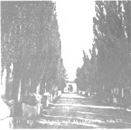
The tombs at Alyscamps, Aries
© Ganne (fonds) / Centre des monuments nationaux
Room4
Montmajour:
A Series
Van Gogh marvelled at the landscapes surrounding Aries, some of which put him in mind of places mentioned in his favourite novels. Among the most evocative were
the grounds surrounding the ruined 12th century Montmajour Abbey, a well-known landmark north of Aries. After making a number of drawings of Montmajour in May 1888, he returned in July to create a series of large-scale works on paper. These remarkable drawings depict a hybrid place;
at once the result of meticulous observation and the artist's imagination.
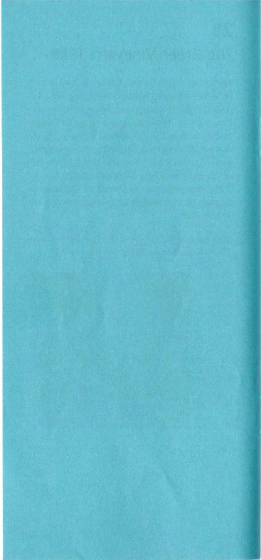
29
View of Aries from Montmajour, 1888
31
The Rock of Montmajour with Pine Trees, 1888
The distinctive skyline of Aries, with the smoking chimneys of the town's factories on the far left, was recorded by Van Gogh as he stood on the heights of Montmajour
Abbey. He described the scene to his brother as a contrast between 'the wild and romantic foreground - and the broad, tranquil distant prospects with their horizontal lines'. He considered it the first image in a series
he dedicated to the site.
Reed and quill pen and ink and pencil on paper
The National Museum of Art, Architecture and Design, Oslo
30
Trees, Montmajour, 1888
In July 1888 Van Gogh returned to the rough and rocky grounds of Montmajour in the company of Lieutenant Milliet (1). The terrain put the artist strongly in mind of the abandoned garden 'Le Paradou' (a Proven al word for 'Paradise'), which featured in Emile Zola's novel The Sin of Abbe Mouret (1875). The importance of the Montmajour drawings to Van Gogh was reflected in his choice of large-format Whatman paper.
Pen, reed pen on wove paper
Collection du Musee des Beaux-Arts, Tournai
Montmajour's rocky outcrops, with small pine trees and shrubs clinging wherever they could, inspired some of 'the best' reed-pen drawings of Van Gogh's career. In this dramatic view, he includes an obscured glimpse of Aries on the far left. In Zola's novel, the Abbe, who has forgotten his vows of chastity due to amnesia, occupies the wild paradise of Le Paradou
with his lover, distanced from the realities of daily life.
Pencil, pen, reed pen, brush and black ink, on wove paper Van Gogh Museum, Amsterdam
(Vincent van Gogh Foundation)
32 n
Hill with the Ruins of Montmajour, 1888
In this extremely bold composition, the ruined abbey is dwarfed by an enormous foreground rock. Van Gogh told Theo he had journeyed to Montmajour 50 times and remained enamoured despite the heat, the fierce mistral wind and the mosquitoes. 'If a view makes one forget those little vexations, there must be something in it.'
Chalk, ink, pencil on paper
Rijksmuseum. Purchased with the support of the Vereniging Rembrandt and the Prins Bernhard Fonds

33
View of La Crau from Montmajour, 1888
Van Gogh contrasts a steam train with a horse-drawn carriage in this sweeping
panorama across the plain of La Crau. The I
\
vista recalls the pivotal scene in Zola's The Sin of Abbe Mouret when the priest's amnesia
lifts as he sees the landscape below Le Paradou dotted with people living ordinary lives. Van Gogh considered this the last drawing of the Montrnajour series and among 'the best I've done with my pen'.
For conservation reasons, this work is on display for the first month of the exhibition only
Pen and reed pen on paper
The British Museum. Cesar Mange de Hauke Bequest, 1968,0210.20
34
A Trunk of a Tree, 1888
Using the top edge of the paper to crop this virtuoso depiction of a tree, Van Gogh
adopts the bold compositional devices found in Japanese woodblock prints. He had been collecting such prints during his time in Paris, and greatly admired the Japanese approach to drawing and mark-making in translating the natural world onto paper.
Pen and sepia ink on buff paper
Virginia Museum of Fine Arts, Richmond, Collection of Mr. and Mrs. Paul Mellon, 95.33
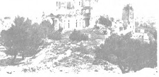
Around Aries - Montmajour - The Ruins of the Abbey, around 1900
Cl Reproduction Benjamin Gavaudo / CMN
Room 5
Decoration
Van Gogh developed his decoration of the Yellow House into a concept for the presentation of his work that could stand
alongside the paintings of his contemporaries, and even be transferred for exhibition in
Paris. Throughout his time in Provence, he dispatched his work to his brother in the capital and submitted pictures to exhibitions in Paris and Brussels. Visitors also came to Theo's flat to see Vincent's work. After Van Gogh's first mental breakdown at the end of 1888, and subsequent crises in the following spring, during which time he lost possession of the Yellow House, he carried on developing his ideas for the decoration. One of his most famous groupings, devised during the spring of 1889 when he was in Saint-Remy, is recreated in this room: two Sunflower
pictures flanking La Berceuse.
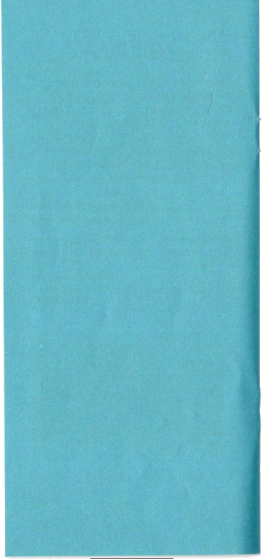
35
The Stevedores, 1888
'I saw a magnificent and very strange effect this evening. A very large boat laden with coal on the Rhone, moored at the quay On the
boat, small workmen were coming and
going, carrying the cargo ashore. It was pure Hokusai.' Van Gogh's description of a scene that reminded him of the celebrated Japanese printmaker later resulted in this remarkable picture. The sunset is captured in orange, yellow and turquoise streaked with lilac.
Oil on canvas Private collection
36
The Trinquetaille Bridge, 1888
At Aries, a modern bridge crossed the
Rhone to connect the old town with the new Trinquetaille quarter. As in The Stevedores (35),
Van Gogh explores the expressive potential he could achieve using an observed, modern life subject. The plunging perspective and exaggerated colours, including the river and
sky being 'the colour of absinthe', had a specific aim that he outlined in a letter to his brother: 'I'm attempting something more heartbroken and therefore more heartbreaking.'
Oil on canvas
Courtesy of Wynn Fine Art
37
The Courtyard of the Hospital at Aries, 1889
In the spring of 1889, Van Gogh spent extended time in the hospital in Aries, where he was given a room as a studio. He painted when well enough and carried on seeking ways to imbue observed details with emotion. 'So it's a painting chock-full of flowers and springtime greenery,' he wrote to his sister, Willemien (1862-1941). 'However, three black, sad tree-trunks cross it like snakes, and in the foreground four large sad, dark box bushes.'
Oil on canvas
The Swiss Confederation, Federal Office of Culture, Oskar Reinhart Collection 'Am Rbmerholz', Winterthur
38
View of Aries, 1889
The bare trunks of three poplars, cropped by the edges of the canvas, form a foreground screen through which the more distant skyline of Aries and its flowering orchards can be seen. Van Gogh must have hoped his inventive
combination of daring geometry and rich surface texture would impress other artists. He sent
the picture to two high-profile, avant-garde exhibitions in early 1890: the Salon des lndependants in Paris and Les XX in Brussels.
Oil on canvas
Bayerische Staatsgemaldesammlungen - Neue Pinakothek, Munich
1
39
Field with Poppies, 1889
In early June 1889, Van Gogh focused on the landscapes beyond the grounds at Saint-Remy. This dense patchwork of fields, in which the bright reds of poppies catch the eye, was among the first paintings he made. In what was now becoming his practice, the work was only partially painted outdoors. Back in the studio, Van Gogh adjusted the view to suit
his expressive aims: the two houses were inserted, the layout of the fields altered, and the cypresses added.
Oil on canvas
Kunsthalle Bremen - Der Kunstverein in Bremen
40
The Large Plane Trees
(Road Menders at Saint-Remy), 1888
Van Gogh witnessed this scene while walking through Saint-Remy in the autumn of 1889.
Inspired to make a painting, he used a piece
of fabric printed with tiny red diamonds (visible in the rocks, bottom left). Van Gogh made a second version on traditional canvas, but it was this picture that he had Theo send to the Salon des lndependants exhibition in Paris in 1890.
Oil on fabric
The Cleveland Museum of Art, Gift of the Hanna Fund,
1947.209
41 n
Portrait of a Peasant (Patience r=scalier), 1888
Van Gogh was convinced he could transform the likeness of Patience Escalier, an old gardener he met in Aries, into the image
of a quintessential peasant through his use of exaggerated colour and the handling of paint. In a letter to his brother, he compared it to the way he intended to paint The Poet (3), in which a deep blue background would express 'the infinite'. Here, he used blazing oranges and glowing gold tones to communicate 'the very furnace of harvest time, deep in the south'.
The portrait formed part of his decoration.
The loan of this extraordinary work is the result of a special exchange partnership between the National Gallery and the Norton Simon Museum, which most recently involved the presentation of Picasso lngres: Face to Face in 2022.
Oil on canvas
Norton Simon Art Foundation, Pasadena, California
42 n
Sunflowers, 1888
44
Sunflowers, 1889
One of the first of the Sunflowers Van Gogh painted in Aries, this picture was hung in the guest bedroom of the Yellow House in preparation for welcoming Paul Gauguin to his 'artist's home'. Although the two men
disagreed on many things over the two months they lived and worked together, Gauguin greatly admired the Sunflower paintings, and later wrote to Van Gogh describing them as
a 'perfect page of an essential "Vincent" style'.
Oil on canvas
The National Gallery, London. Bought, Courtauld Fund, 1924
43
La Berceuse (The Lullaby), 1889
Van Gogh painted Augustine Roulin and her children on several occasions before creating this symbolic depiction of her as an ideal of motherhood, a rope to rock an unseen cradle in her lap. With a title that could be translated as The Lullaby, this canvas was one of several versions, the first of which was begun in Gauguin's company in late 1888. Its flattened
areas of colour, bounded by firm outlines, show Van Gogh contributing new ideas to the latest artistic developments in Paris.
Oil on canvas
Museum of Fine Arts, Boston. Bequest of John T. Spaulding
Van Gogh realised the importance of the Sunflowers and painted additional versions of them in early 1889, such as this one with its blue background. Later, in May, he elaborated a daring new scheme for their display in a letter to his brother. Describing it as a 'triptych' (three-panelled work), he imagined two Sunflower pictures flanking La Berceuse (43) which, if hung in a ship, might bring comfort to sailors travelling far from home.
Oil on canvas
Philadelphia Museum of Art: The Mr. and Mrs. Carroll
5. Tyson, Jr., Collection, 1963
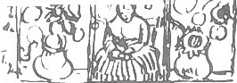
'fl L'l ·:·,\1,, ,:ri;;- ;_.7>
'-
c • . ,J• 1. I lea • , c: • , • • e ... ,._ '- ll14"
,,F,
I
,,
•"•"
"" 'l• -"""'r Ju4.•, .. ,- , .. l'c.- ..
Van Gogh's sketch of the triptych in his letter to Theo, 22 May 1889
45
Oleanders, 1888
In Aries, free-flowering oleanders grew in profusion in the park Van Gogh designated 'the poet's garden'. He associated the plant with love affairs. The two books placed next to the vase in this picture include one of Van Gogh's favourites. This was Emile Zola's 1884
novel La Joie de Vivre (The Joy of Living), a tale
of optimism in the face of relentless difficulty.
Oil on canvas
Lent by The Metropolitan Museum of Art,
Gift of Mr. and Mrs. John L. Loeb, 1962 (62.24)
46
Sti11 Life with Coffee Pot,
1888
In a letter to Emile Bernard, Van Gogh described this still life as 'a variation of blues enlivened by a series of yellows ranging all the way to orange'. The description barely
does justice to the bold arrangement of forms and colours and does not mention the highly conceptual game Van Gogh plays by giving the work a painted, fictional red inner frame set within the expanse of white painted canvas.
Oil on canvas
Basil and Elise Goulandris Foundation Collection, Athens
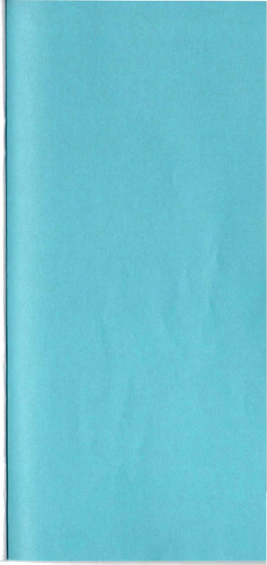
Room 6
Variations on a Theme
The landscape surrounding Saint-Remy, with its olive groves and the craggy limestone of the Alpilles mountain range, provided Van Gogh with rich material for
creating works in series. Developing ideas he had established in Aries, he fixed on subjects and explored their expressive possibilities through variations. At times, he imaginatively pitched his own work against that produced by Gauguin and Bernard. Van Gogh now often created his work in the studio, a room provided for him at the hospital, which led him to produce some of the most stylised
art of his career. He also used the studio
to continue creating 'repetitions' of existing works and new portraits.
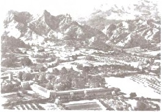
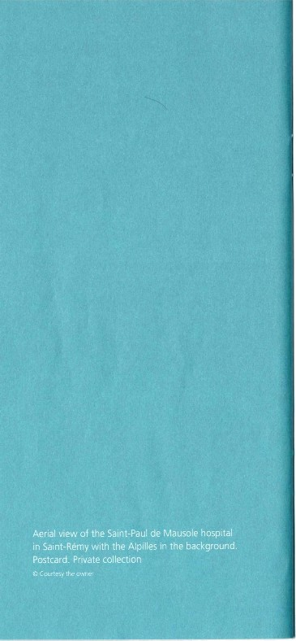
47 n
The Arlesienne, 1890
Oil on canvas
Galleria Nazionale d'Arte Moderna e Contemporanea, Rome
48
The Arlesienne, 1890
Oil on canvas Private collection
In popular culture of the time, the women of Aries were celebrated for their raven-haired beauty. Van Gogh painted five versions of this Arlesienne (woman from Aries). The model, Marie Ginoux (1848-1911), who ran the local cafe, had originally posed for Van Gogh and Gauguin in November 1888. Later, when in Saint-Remy, Van Gogh based his quintessential Provenc;ale on the simplified lines of a charcoal drawing Gauguin had made during the sitting. He added two of his favourite books: Charles Dickens's Christmas Stories, 1843-8, and Harriet Beecher Stowe's now controversial
anti-slavery novel, Uncle Tom's Cabin, 1852. In
a letter to Gauguin, Van Gogh called the image 'a synthesis of an Arlesienne'. He presented one (47) to his friend Emile Bernard, one to Theo and another to Gauguin himself, thus ensuring the paintings would be seen by
artists in Paris.
49 n
A Wheatfield, with Cypresses,
1889
With swirling and rippling strokes of paint, Van Gogh captures the summer mistral wind sweeping through a landscape at the foot
of the Alpilles mountains. He had first made an outdoor painting of this view in late June 1889. But in this studio version of September, he stylised the sky to create a decorative pattern that finds echoes in the mountains, cypresses and vegetation below.
Oil on canvas
The National Gallery, London. Bought, Courtauld Fund, 1923
Landscape with Ploughman,
1889
Van Gogh's view from his room at the hospital was a wheatfield enclosed by a wall. By painting it repeatedly, both from indoors and out, he created a series through which he tried to capture different moods and the essence of the Provenc;al seasons.
The intensity of this autumnal scene in low sunlight is achieved through the bold
articulation of his brushwork and a radically simplified and partially invented background.
Oil on canvas Private collection
51 n
'
Landscape at Saint-Remy (Enclosed Field with Peasant), 1889
Writing to the artist Emile Bernard, Van Gogh described this scene as 'nothing but rough ground and rocks, with a thistle and dry grass in a corner, and a little violet and yellow man'. To increase the expressive potential of the image, Van Gogh chose to emphasise the barren heights of the Alpilles in the background, which he painted rising to the top of the picture.
Oil on canvas
Indianapolis Museum of Art at Newfields, Gift of James W. Fesler in memory of Daniel W. and Elizabeth C. Marmon, 44.74
II
52
Landscape from Saint-Remy (Wheatfield behind Saint-Paul Hospital), 1889
Observing the enclosed field after a storm had 'ravaged and knocked to the ground' the crop of wheat, Van Gogh created this composition in which a large cloud hovers above the scene.
'It's a landscape of extreme simplicity', he noted to Theo and, thinking about his decoration, suggested it would make a good contrasting pair to his first version of The Bedroom.
Oil on canvas
Ny Carlsberg Glyptotek, Copenhagen
53
The Olive Trees, 1889
When Van Gogh worked beyond the hospital at Saint-Remy in early summer 1889, he was delighted by the olive trees seen against the Alpilles. They became a focus in his aim to capture his 'Impressions of Provence' - a series of pictures through which he would transform reality into an expressive ideal. The rhythmic stylisation of the earth, trees and mountains and the form of a massive cloud above were probably all painted in the studio.
Oil on canvas
The Museum of Modern Art, New York. Mrs John Hay Whitney Bequest, 1998
54
The Olive Trees, 1889
Van Gogh made this drawing after the painting alongside (53) and chose to push its abstract, decorative qualities to even greater heights. The virtuosity of his cursive
and calligraphic use of the quill and reed pen puts this work on a par with the Montmajour drawings of the previous summer. Theo van Gogh, however, was surprised at this direction in his brother's work and tried to discourage its further pursuit.
Pencil, quill and reed pen and brown ink on wove paper Promised gift of Jo Carole and Ronald S. Lauder
to the Museum of Modern Art, New York
55 n
Mountains at Saint-Remy, 1889
Taking an actual view as a starting point but choosing not to reproduce it faithfully, Van Gogh painted this highly abstracted landscape using mobile, heavy outlines that he happily acknowledged had little to do with nature. In
a further remove from observation, he invented the foreground hut and sunflowers inspired
by a scene in Le Sens de la vie (The Meaning
of Life), an 1889 novel by Edouard Rod (1857-1910).
Oil on canvas
Solomon R. Guggenheim Museum, New York. Thannhauser Collection, Gift, Justin K. Thannhauser, 1978
56
Olive Trees, 1889
Looking down onto the earth and shadows cast by a grove of olives, Van Gogh began this picture working outdoors in June 1889. But in September, he reworked and changed it in the studio to intensify the work's highly textured surface. Although the yellows, pinks and reds,
which heightened the colour contrasts throughout, have since degraded and almost disappeared, the picture remains remarkably expressive.
Oil on canvas
The Nelson-Atkins Museum of Art, Kansas City, Missouri (Purchase: William Rockhill Nelson Trust) 32-2
57
Olive Trees, I 8r;lJ
The prominent placemc•nl of an intensely yellow sun recalls Van c1oqh's painting of
The Sower (23) of the yE·,ir before, in which the disc of the sun bee c1rnt• c1 natural halo for the figure. Here tlH• di'>< hovers above a
grove of highly stylised oliv<' trees. At the time Van Gogh wanted to prow lo Gauguin and Bernard that an expressive work of art could be made without quoting dirE·• tly from the Bible.
Oil on canvas
Lent by the Minneapolis lnstitut<• of Art, Minneapolis. The William Hood Dunwoody r und
58
Olive Grove, Saint Remy, 1889
Recent technical analysis has suggested that Van Gogh painted this olive grove largely outdoors as natural materials have been found in its paint layers. It is exceptionally well
preserved in terms of its colour. In other work·.. such as Olive Grove with Two Olive Pickers (59) hanging alongside, Van Gogh experimented with paints that were new on the market and which have since faded. For this luminous picture he used more stable pigments.
Oil on canvas
Gothenburg Museum of Art
59
Olive Grove with Two Olive Pickers, 1889
In the studio, Van Gogh repeated the composition of Olive Grove, Saint-Remy (58) to which he added imagined figures, a smiling woman in the foreground and a man in blue. Their presence adds to what was already a highly composed and stylised depiction of
a grove beneath a sky flecked with wisps of red and blue clouds - all painted using drifts of brushstrokes.
Oil on canvas
Kroller-Muller Museum, Otterlo, The Netherlands
60 n
Tree Trunks in the Grass,
1890
Applying paint in calligraphic strokes reminiscent of his reed pen drawings, Van Gogh revels in the textures and colours of this view of flowering weeds growing among the trees in the garden at Saint-Remy. In contrast to the sadness and suffering he aimed to convey in depictions of the hospital grounds the previous autumn, his paintings of the garden in spring 1890 suggest joy and hope.
Oil on canvas
Kroller-Muller Museum, Otterlo, The Netherlands
61
Long Grass with Butterflies,
1890
By the spring of 1890 Van Gogh was acting on plans to leave the South of France and return north. He was, however, captivated yet again by signs of burgeoning life, such as butterflies among the grass and details of the undergrowth he found in the garden at Saint-Remy.
Oil on canvas
The National Gallery, London. Bought, Courtauld Fund, 1926
'The paint r 01 1 t1e future is a colour I t uch as there hasn't lH ·n before.'
Van Gogh wrote these words to his brother in the early months of his ·.tciy In Aries, and strove to achieve this goal throughout his time in Provence. In just over two years,
he developed ways of u inq intense colour and technique to create poetic subjects filled with emotion.
On 16 May 1890 Van Gogh left Saint-Remy to return to northern France He settled
in Auvers-sur-Oise, not far from Paris, and created an extraordinary body of new work. Two paintings from this period can be found in the Main Collection in Room 43.
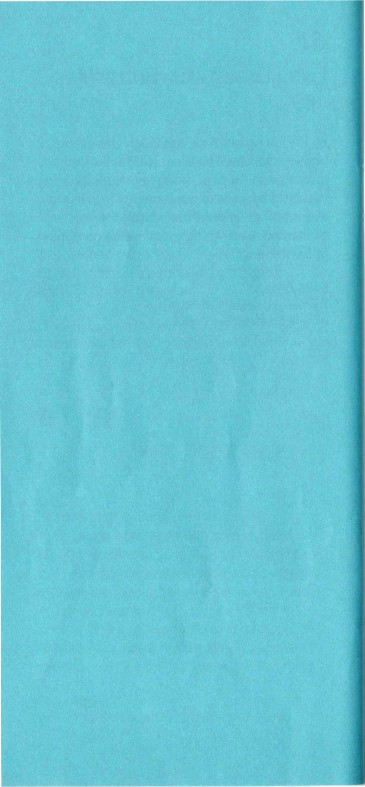
Chronology
1853
30 March
Vincent Willem van Gogh is born in Zundert, the Netherlands.
1869-75
Van Gogh works for the art dealers Goupil & Cie at The Hague, London and Paris. His brother Theo (1857-1891) works for the same company from 1873.
1876-9
Van Gogh takes a teaching post in England, where he also becomes a Christian lay preacher. He works as an evangelical preacher in the Borinage, a coal-mining region in Belgium.
1880-5
Theo begins to provide financial support. Van Gogh decides to become an artist and spends a brief time at the Royal Academy of Fine Arts, Brussels, but over the next years he works chiefly on his own. He lives in The Hague for two years, where he receives painting lessons, and at the end of 1885 he moves to Antwerp. Throughout this time, in a repeating pattern, Van Gogh is forced home to live with his parents due to lack of funds.
1886
End of February
Van Gogh moves to Paris to live with Theo, who is now an art dealer. He remains in Paris for the next two years.
Early March-early June
Van Gogh attends the studio of the painter Fernand Corman (1845-1924). He becomes friends with the artists Emile Bernard
(1868-1941), Louis Anquetin (1868-1932) and Henri de Toulouse-Lautrec (1864-1901), among others.
Autumn
Van Gogh exhibits works at a small number of informal venues, including the shop of the colour merchant Pere Tanguy (1825-1894).
1887
About February-March
He organises an exhibition of Japanese prints from his own collection at the Montmartre cafe Le Tambourin.
May
Van Gogh meets and works with Paul Signac (1863-1935) in the suburbs of Paris.
November-December
He organises an exhibition at a restaurant on the Boulevard de Clichy including works by Bernard, Anquetin, Toulouse-Lautrec and himself. He meets the painters Georges Seurat (1859-1891) and Paul Gauguin (1848-1903).
1888
20 February
Van Gogh arrives in Aries and starts working right away. Throughout his time in the South of France he sends his work to Theo.
1 May
Van Gogh rents the Yellow House and uses
it as a studio during the summer while lodging elsewhere in the town. He creates the drawings from Montmajour and views of the public garden in Aries.
17 September
He moves into the Yellow House where he aims to create an artist's home.
23 October-23 December
Paul Gauguin lives and works with Van Gogh at the Yellow House.
23 December
Van Gogh has his first mental breakdown, cuts off his left ear and is admitted to the hospital in Aries the next day.
1889
7 January
Van Gogh leaves the hospital and resumes work.
February
He experiences repeated crises and hospitalisations.
March and April
Residing at the hospital in Aries, Van Gogh is assigned a room where he continues to work.
23-24 March
The painter Paul Signac pays Van Gogh a visit.
8 May
Van Gogh admits himself to the mental health hospital in Saint-Remy-de-Provence.
He experiences two further crises in July/August and December. They do not deter him from continuing to work at a very high level, first in
the hospital's grounds and then also in the countryside. He is assigned a room to use as a studio and continues to send his work to his brother.
Autumn
Van Gogh resumes correspondence with his friends Paul Gauguin and Emile Bernard. Theo sends two of Van Gogh's works to the Salon des lndependants exhibition in Paris.
1890
Following a renewed crisis at the end of January, Van Gogh falls ill again in February for almost two months.
February
Van Gogh shows six paintings at the annual avant-garde exhibition of Les XX in Brussels.
March/April
He exhibits ten paintings at the Salon des lndependants in Paris.
16 May
Van Gogh leaves Saint-Remy and, after a stop in Paris, arrives in Auvers-sur-Oise, north-west of the city, on 20 May. He immediately takes up work, creating an impressive body of paintings, drawings and prints.
27 July
Van Gogh shoots himself in the chest and dies from his wounds two days later.
For more information about Van Gogh's life,
as we// as all his letters, visit vangoghletters.org. All letter quotes in the exhibition are taken from this source.
Events
Creative Workshops
Originary Arts: Life Drawing
Friday 20 September, 6.15-7pm and 7.15--8pm Room 32
Booking essential
Originary Arts return for a colourful life drawing session inspired by Van Gogh
2B Or Not 2B Collective: Life Drawing
Friday 18 October
6.15-7pm, 7.15-8pm, Room 32
Booking essential
2B Or Not 28 Collective return to the Gallery for life drawing sessions sparked by Van Gogh: Poets & Lovers
The Poetry of the Mark
Thursday 14 November, 4-Spm, Room 34 (Meet in Central Hall)
Free, drop-in
Join us for a creative workshop inspired by Van Gogh that explores the poetry of mark-making
Music and Performance
Lunchtime Listen: Creature & Machine Friday 25 October, 1-2pm, Room 32 Free, drop-in
Alt-pop singer-songwriter Creature & Machine will be playing a selection of acoustic arrangements
of her own material, including several new compositions written in response to Van Gogh: Poets & Lovers
Talks and Lectures
Friday Lates: Michael Glover, 'Vincent's Poets'
Friday 20 September, 6-6.40pm, Room 45 Free, drop-in
Author and poet Michael Glover reads from his new volume of poetry inspired by Van Gogh's artwork
British Sign Language Tour:
Van Gogh and Post-Impressionism
Friday 22 November, 6.30-7.30pm, Room 43 Free, drop-in
Join Deaf lecturer Alan Murray for a tour in BSL exploring the work of Van Gogh and other artists working in France at the end of the 19th century
Online Events
Drawing like Van Gogh:
Mark-Making and Movement
Tuesday 8 October 2024
6:30-7:30pm, £10, online only
Join us for an online artmaking session focused on mark-making and movement in drawing inspired by Van Gogh's time in Provence
The Blinding Light: Van Gogh in Provence
Thursday 17, 24, 31 October 2024 3:30-5:30pm, £45, online only
Join Carlo Corsato and Jo Conybeare for a focused three-session exploration of Van Gogh's dynamic paintings and pivotal time in the South of France
rJr !"'ore 1nfor'Tldt1or ord boc1< r'q' pie >e v·<;•+
'1dtIona lgaIlery.org.uk/events
Informat1on
Exhibition Opening Hours
Open daily 10am-6pm (last admission 5.15pm) Friday until 9pm (last admission 8.15pm)
No readmission
Exhibition Catalogue
A fully illustrated catalogue accompanies this exhibition: £35 hardback
Shops
Open daily 10am-5.45pm, Fridays until 8.45pm nationalgallery.co.uk
Eating and Drinking Espresso Bar
Level 0, Getty Entrance
Daily 10am-5.30pm, Fridays until 8.45pm
Muriel's Kitchen
Level 0, Getty/St Martin's Place entrances Daily 10am-5.45pm, Fridays until 8.45pm
Ochre Restaurant
Level 0, Getty/St Martin's Place entrances Sunday-Wednesday 12 noon--6pm
Thursday-Saturday 12 noon-11pm
nationalgallery.org.uk Information: 020 7747 2885 information@nationalgallery.org.uk
Trafalgar Square, London WC2N 5DN
Please recycle this booklet Cl
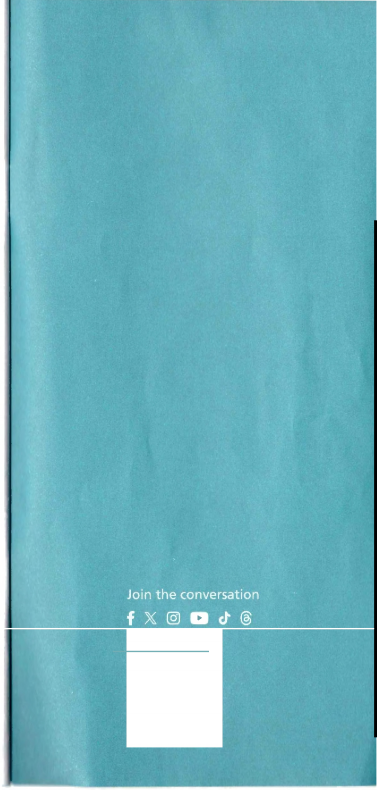